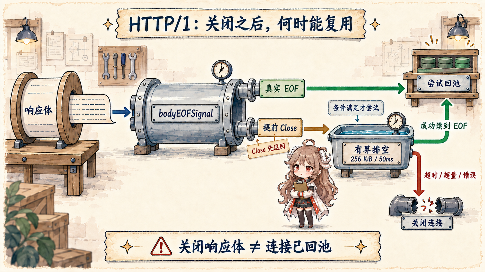
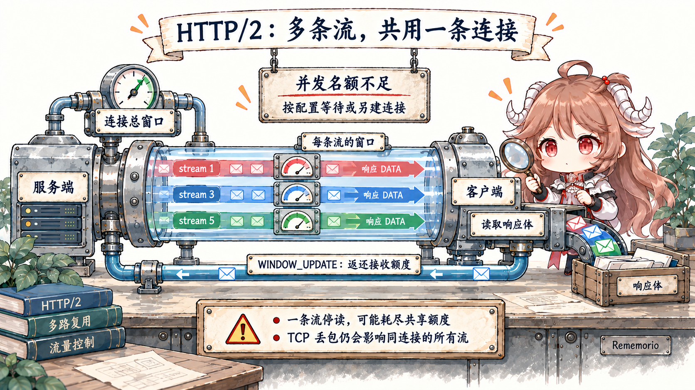

阅读目标：先不背连接池字段。读完前半篇，你应该能区分三种“等”：等一条可用连接、等服务器返回数据、等 HTTP/2 连接里的 stream 名额。它们都表现为请求变慢，却需要完全不同的证据和修复。
本文先讲 Transport 与 Response.Body 文档保证的行为，再用 Go 开发分支固定快照 的
net/http/transport.go、
internal/http2/transport.go 与
httptrace/trace.go。
本文聚焦 HTTP/1 与 HTTP/2，连接池实现位于 transport_pool.go。固定快照中的字段与错误恢复策略属于开发分支实现；各项配置仍需按实际工具链版本核对。各诊断工具能观察什么，依据 httptrace、
runtime/metrics、
net/http/pprof 与 Diagnostics。
一、先看一个“已经复用，为什么还在等”的请求
假设 fetchd 同时向同一个站点发出二十个请求。共享的 http.Client 确实会复用连接，但“复用”不表示每个请求立刻拿到通行证：
HTTP/1 连接同一时刻通常只服务一组顺序交换；连接总数达到上限时，新请求会排队；HTTP/2 虽能在一条连接上并发多个 stream，也仍受 stream 与流控窗口限制。
因此看到延迟上涨时，先问请求卡在哪一段：还没拿到连接，已经发出但服务器没回，还是拿到了 HTTP/2 连接却没有可用 stream 或窗口？
连接池的意义，是让一个长期存在的 Transport 统一复用连接、计算每个 host 的并发数并让超额请求排队，而不是简单保存一袋 socket。
20 个请求到同一个站点：
先到的请求借走现有连接或 stream
→ 资源够：立刻写出请求
→ 连接额度满：在 GetConn 前后排队
→ HTTP/2 stream 满：等一张 stream 票
→ 已经写出：等上游响应或流控额度所以“连接复用了”只回答有没有重复建 TCP/TLS，不能回答请求是否排队。诊断时要给同一条请求分别记录拿资源、写请求、 收响应三个时间点，才能知道等待属于池、上游还是协议流控。
一个共享 Transport 按连接目标保存 clientConnPoolEntry，每个条目集中管理可复用连接、等待请求数、正在拨号的记录和连接计数。cache key 由 connect method 产生，包含 scheme、address、proxy 与是否强制 HTTP/1 等信息。
所以两个 URL 看起来同域，不代表一定命中同一池；反过来，为每次请求新建 Transport，则会把所有复用状态主动丢掉。
transport := http.DefaultTransport.(*http.Transport).Clone()
transport.MaxConnsPerHost = 16
transport.MaxIdleConnsPerHost = 8
transport.IdleConnTimeout = 90 * time.Second
client := &http.Client{Transport: transport} // 进程内共享
http.Client 和 Transport 都设计为并发安全、可长期复用。这里的“共享”也明确了负责人：
进程负责创建和关闭 idle connections，请求只借用连接或 stream。若每次 handler 都新建 Transport，就会重复 DNS/TCP/TLS 工作，也让
MaxConnsPerHost 失去跨请求的统一约束。仅新建 Client 而继续共享同一个 Transport，仍会共享连接池。
二、HTTP/1：拿连接、用连接、归还连接
2.1 poolGetConn 等连接可用或拨号额度释放
getConn 发出 httptrace 的 GetConn 事件后，把获取连接交给 poolGetConn。后者先锁住目标条目，尝试拿走一条可用 HTTP/1 连接；没有现成连接时增加等待计数，进入 select 循环。正在拨号时仍可接收别人归还的连接，因此复用连接与新拨号继续竞争同一次获取。
条目用三个容量为 1 的 channel 同时表达互斥锁与可用条件。持锁时三个 channel 都没有值；解锁时根据当前状态向其中一个放入令牌：有连接可取时选择 cangetc，否则有拨号额度时选择 candialc，两者都不可用时选择维护代码使用的 lockc。等待请求只监听前两者，并另外监听自己的拨号结果与 context 取消。
// clientConnPoolEntry.unlock 中发布下一个可执行动作
switch {
case len(ent.idleConns) > 0 || ent.altConn != nil:
ent.cangetc <- struct{}{}
case tr.MaxConnsPerHost <= 0 || ent.numConns+ent.dials.size < tr.MaxConnsPerHost:
ent.candialc <- struct{}{}
default:
ent.lockc <- struct{}{}
}
拿到拨号令牌后，请求创建一次 poolDial，启动拨号并停止监听下一次拨号额度；每次获取连接最多发起一次拨号。拨号 context 通过 context.WithoutCancel 保留值、脱离请求取消，再加内部 cancel。若请求先取消或先取到归还的连接，拨号仍可完成；poolDialForEntry 看到请求已结束获取后，可把新连接放回池供其他请求使用。请求的取消错误会及时返回给调用者。
2.2 三个限制分别控制“总量”和“留下多少”
| 配置 | 计数范围 | 达到上限 | 常见误读 |
|---|---|---|---|
MaxConnsPerHost | dialing + active + idle | 新 dial 排队 | 只限制 idle |
MaxIdleConnsPerHost | 单 host 保留的 idle | 多余 idle 关闭 | 限制并发请求 |
MaxIdleConns | 所有 host 的 idle 总量 | 按 LRU 清理 | 总连接硬上限 |
IdleConnTimeout | 连接保持 idle 的时长 | 超时关闭 | 请求总 timeout |
上表给出配置文档的计数语义。当前外层池以 ent.numConns + ent.dials.size 判断拨号额度，HTTP/1 的已建立连接与正在拨号分别计入这两项。没有可用连接且达到上限后，条目只发布 lockc；请求要等连接归还、连接退出释放额度，或自己的 context 取消。等待耗时由应用通过 GetConn/GotConn 或 wrapper 记录。
HTTP/2 还存在一层实现限制：外层的 altConn 通常引用一个自行管理连接池的 HTTP/2 Transport，外层计数没有逐条统计它内部的 TCP 连接。因此在这个快照中，MaxConnsPerHost 的外层计数不足以证明 HTTP/2 的实际 socket 总数受同一硬上限约束；还要核对下文的 stream 限制与实际连接观测。
2.3 HTTP/1 的 persistConn 是一读一写两条循环
dial 成功后，HTTP/1 路径建立 persistConn，由一个 writeLoop 串行写 request，一个 readLoop
读取对应 response。keep-alive 让多个请求顺序复用同一连接，并没有在同一 HTTP/1 pipe 上把多个 response 任意交错。
readLoop 还负责判断连接是否健康、response body 是否完成，以及何时调用 tryPutIdleConn。
request goroutine
→ persistConn.roundTrip
→ writeLoop writes request
→ readLoop parses response
→ caller owns Response.Body
→ readLoop waits for body EOF decision
可复用且没有 body 的普通 response 可以在交付前回池；有 body 时，readLoop 包一层 bodyEOFSignal，然后停在
waitForBodyRead。当前通知 channel 传递无指针的 bodyReadStatus：真实 EOF、提前关闭、读取错误分别对应 bodyReadEOF、bodyReadClosedEarly、bodyReadError。
正常 EOF 可以直接尝试回池；提前关闭则进入下面的有界排空分支。两条路径都仍要求连接健康、未见 socket EOF、request 已写完。
上传请求体时，服务器可能先返回拒绝响应再关连接，客户端的写错误与响应读取就会竞争。当前 persistConn.roundTrip 遇到 *net.OpError 网络写错误，会继续等响应，最多等待 50ms；若配置了更短的 ResponseHeaderTimeout，则采用较短值，context 取消仍参与 select。响应及时到达时交付响应，等待到期则返回写错误；从应用提供的 body 读出的普通错误会立即返回。这让上游的拒绝状态有机会保留下来。
2.4 Close 是释放资源，不自动等于可复用
短响应：读到 resp.Body 的真实 EOF → Close → 连接可以回池
提前关闭：LimitReader 的 EOF 未证明底层 EOF → Close 通知 readLoop 后返回
→ 符合条件：后台有界 drain → 真实 EOF 后才尝试回池
→ 不符合条件、超量、超时或错误：关闭连接
当前开发快照已不再把“EOF 前 Close”一律解释为丢弃连接。readLoop 会先判断连接可复用、keep-alive 开启且 ContentLength ≤ 256 KiB；未知长度的 -1 也满足这个入口条件。随后先允许 Close 返回，再尝试丢弃未读数据：最多读取 256 KiB + 1 字节，必须在 50ms 内观察真实 EOF 才能回池。入口比较的是响应的 ContentLength，不是剩余字节数；已知总长度大于上限，即使只剩一个字节也不走此分支。这里读的是当前 resp.ContentLength；自动 gzip 解压会把它改成 -1，所以不能直接拿线上原始 Content-Length 推断。排空读取底层响应体，压缩字节预算也不等于应用的解压后读取上限。
回池还要求请求属于普通 HTTP 交换。当前 readLoop 对所有 CONNECT 请求都禁用 keep-alive 回池，包括非 2xx 响应；成功切换为隧道的连接则进入隧道所有权路径。

waitForBodyRead := make(chan bodyReadStatus, 1)
body := &bodyEOFSignal{
body: resp.Body,
earlyCloseFn: func() error {
waitForBodyRead <- bodyReadClosedEarly
<-eofc
return nil
},
fn: func(err error) error {
if err == io.EOF {
waitForBodyRead <- bodyReadEOF
<-eofc
} else {
waitForBodyRead <- bodyReadError
// ...
}
return err
},
}
resp.Body = body
这正好解释 fetchd 在 1 MiB 上限附近的行为：io.Copy(io.Discard, io.LimitReader(resp.Body, maxResponseBytes))
对小于 1 MiB 的正常响应会读到真实 body EOF，连接可复用；若上游仍有数据而读取达到上限，LimitReader 在自己的 N 归零时返回 EOF，
却没有让被包装的 resp.Body 再读到 EOF。随后 defer Close 进入提前关闭分支。若已知总长度超过 1 MiB，它也超过 256 KiB 排空入口限制，连接会关闭；若长度未知，当前实现仍可能在上述预算内排空尾部后复用。
这不是简单 bug，而是防止不可信大响应无限消耗带宽的正确取舍。不能为了复用连接无上限地读取不可信数据。还要区分应用读取上限与实际网络字节数：自动排空会在应用停止读取后继续消费少量数据。
结果是否 truncated、Close 何时返回与连接最终是否复用应分别记录；需要证明回池时观察 httptrace.PutIdleConn 或后续 GotConn，而不是把 Close 返回当作完成信号。这些排空阈值是源码实现，不是 API 保证。
2.5 归还连接后，条目重新发布可用令牌
tryPutIdleConn 拒绝禁用 keep-alive 或已损坏的连接，再标记 reused，并把普通 Transport 连接交给 poolPutIdleConn。HTTP/1 连接先加入目标条目的 idleConns 与全局 LRU，接受每目标容量、全局容量与空闲超时约束。条目解锁后发布 cangetc，等待请求取出连接并从 idle list 和 LRU 移除。等待者通过条件令牌重新竞争。
HTTP/2 与 HTTP/3 的共享连接另外存放在 altConn；取用它时保留这个引用，未来请求仍可共享。HTTP/1 的空闲定时器现在属于目标条目：触发后检查其中各连接的 idleAt，关闭到期连接，再按下一条到期时间重设定时器。协议内部仍负责自己的连接与 stream 状态。
2.6 复用连接失败后，重试还要满足重放条件
空闲连接可能恰好被服务器关闭。shouldRetryRequest 会结合连接是否曾成功使用、错误发生阶段及请求能否重放决定重试。当前 Request.isReplayable 把 QUERY 与 GET、HEAD、OPTIONS、TRACE 一并识别为幂等方法；若带请求体，还需要 GetBody 重建它。幂等键也可表达重放意图，但业务仍需提供相应去重语义与重试预算。
req, err := http.NewRequestWithContext(ctx, "QUERY", endpoint, strings.NewReader(query))
if err != nil {
return err
}
// strings.Reader 让 NewRequestWithContext 自动设置 GetBody。
// 换成任意一次性流后，需要另外提供可重新打开正文的 GetBody。已复用连接上若一个字节都没写出，源码另有较早的安全重试分支：只要正文为空或可通过 GetBody 重新读取即可。其他符合重放条件的请求也只对指定网络失败重试，例如读取首响应字节时失败或服务器关闭空闲连接；HTTP 503 等状态响应仍交给业务处理。
shouldRetryRequest；Request.isReplayable。三、HTTP/2 把“一连接一请求”变成“一连接多 stream”
先想象两个 worker 同时抓网页：它们共用一条 TCP/TLS 通道，但各拿一张独立的 stream 票，响应片段可以在通道上交错。 每张票有自己的“小水杯”——stream 流控窗口；整条连接还有所有 stream 共用的“大水箱”——connection 流控窗口。 任一额度用完都要等对端归还；能多路复用，不等于没有排队和背压。
内部包中的 http2.ClientConn 持有底层 TLS connection、streams map[uint32]*clientStream、
nextStreamID、maxConcurrentStreams、connection-level flow window 与写锁。
每次 RoundTrip 创建独立 clientStream，保存 request context、response header channel、body pipe、stream flow window 和 abort state，
再启动 go cs.doRequest。客户端发起的 stream ID 使用递增奇数 1、3、5……

type ClientConn struct {
tconn net.Conn
flow connOutflow
inflow inflow
streams map[uint32]*clientStream
nextStreamID uint32
maxConcurrentStreams uint32
reqHeaderMu chan struct{}
}
type clientStream struct {
cc *ClientConn
ctx context.Context
ID uint32
flow outflow
inflow inflow
abort chan struct{}
}3.1 并发上限是 stream slot，不只是 TCP 连接数
connection 可接新请求的条件包括未收到 GOAWAY、未 closing、stream ID 未耗尽且不过 idle timeout。
当前占用数包含 active streams、reserved slots 和等待确认的 reset streams；达到 peer 的
SETTINGS_MAX_CONCURRENT_STREAMS 后不能继续在这条连接开 stream。
当前公共配置入口是 Transport.HTTP2.StrictMaxConcurrentRequests。默认 false 时，Transport 可以新建 TCP connection，让每条连接分别服从 peer 的 per-connection stream limit；
设为 true 时跨到该服务器的连接遵守这个限制，RoundTrip 必要时等待。HTTP2Config.MaxConcurrentStreams 则只适用于 Server，不能拿它设置客户端并发。前者提高并行度但增加 socket/TLS 和 upstream 压力，后者限制得更严格，却可能形成 queue。
因此不能依赖“HTTP/2 只需要一条连接”；它只是低于 stream limit 且连接健康时的常见结果。
transport := http.DefaultTransport.(*http.Transport).Clone()
transport.HTTP2 = &http.HTTP2Config{
StrictMaxConcurrentRequests: true,
}此字段以本文开发快照为准；较旧工具链可能没有该字段。
可用性与 slot：isUsableLocked / availableLocked；strict 模式语义：StrictMaxConcurrentRequests。3.2 两级 flow control 让“没读 body”影响更大
每条 stream 有自己的 window，connection 还有所有 stream 共享的 window。接收 DATA 会消耗两者；
应用从 response body 读取后，client 才累计 credit 并发送 WINDOW_UPDATE 给 stream 与 connection。
单个不读的巨大 response 先卡住自己的 stream；若持续占满 connection-level receive window，也会压住同连接的其他 stream。
reqHeaderMu 是发送新 request header block 的 semaphore，避免 header block 交错，不代表整条 HTTP/2 connection 串行。
DATA frame 仍会在 stream 间 multiplex。HTTP/2 消除了 HTTP/1 请求级队头阻塞，却没有消除 TCP loss 的传输层队头阻塞：一个丢包仍会阻塞同一 TCP connection 上所有 stream 的有序字节。
发送侧的窗口实现还避免了每次设置更新都遍历所有 stream：连接保存 connOutflow.initial，每个 stream 保存相对这个初始值的 delta。可发送字节取“initial + delta”与连接剩余额度的较小值；SETTINGS_INITIAL_WINDOW_SIZE 只更新共享初始值，stream 在使用窗口时再计算实际额度并检查溢出。接收侧按应用读取量返还 credit，分别维护 stream 与连接两级额度。
3.3 取消一个 stream，通常保留整条连接
roundTrip 同时等待 response headers、stream abort、request context 和旧式 Request.Cancel。
context 取消时先 abortStream，writer 发送 RST_STREAM；当前 stream 结束，但其他 stream 继续使用同一连接。
reset 还会计入并发 slot，直到 HTTP/2 实现通过与 reset 一起发送的 PING 确认 peer 收到，避免对完全无响应的连接无限发送 reset 后的新请求。
GOAWAY 是 connection 级状态：不再创建新 stream，已被 server 接受的旧 stream 仍可能完成；客户端按 stream ID 和错误决定可否安全 retry。
应用不能把所有错误都无脑重试，特别是 request body 不可重放或非幂等操作。使用 Request.GetBody、幂等键与明确 retry budget，
而不是把 Transport 的内部重试当业务 exactly-once。
本文的连接与 stream 路线限定为 HTTP/1 和 HTTP/2。该快照已把 HTTP/3 实现迁入 net/http/internal/http3，但 Protocols.setHTTP3 仍未导出，测试通过 测试专用 SetHTTP3 接入；现有 fetchd 配置继续使用 HTTP/1 与 HTTP/2。
四、实验同时证明复用、排队和 multiplex
transport_lab_test.go
先用 httptrace.GotConn 验证 HTTP/1：第一条请求读到底层 EOF 并 Close 后，第二条请求的
Reused=true 且获得同一个 net.Conn；大于排空阈值的已知长度响应在 EOF 前 Close 后，第二条得到新连接。对应 TestEarlyLargeBodyClosePreventsHTTP1Reuse。Go 1.27 及以上另运行 transport_drain_go127_test.go 中的 TestEarlySmallBodyCloseCanReuseAfterDrain：小响应提前 Close 后先等 PutIdleConn，再验证下一请求复用，避免把 Close 返回误当作排空完成。
trace := &httptrace.ClientTrace{
GotConn: func(info httptrace.GotConnInfo) {
gotConn = info.Conn
reused = info.Reused
},
PutIdleConn: func(err error) {
putIdle <- err
},
}
per-host queue 测试把 MaxConnsPerHost 设为 1，保留第一条 HTTP/1 response body 不读；
第二条请求进入 GetConn 后取消，必须以 context.Canceled 返回，server 只看到一条请求。
HTTP/2 测试先 warm 一条 TLS connection，再让两个 handler 同时到达 barrier；两条请求都报告 HTTP/2、共享 warm connection，
server 的 StateNew 计数仍为 1。测试用 channel 证明并发，不用 sleep 猜时序。
cd go-runtime/examples/fetchd
go test -run 'Test(Transport|EarlyBody|MaxConns|HTTP2)' -count=20
go test ./...
go test -race ./...
go vet ./...五、联合诊断从“在哪一层慢”开始
一次 P99 排查：
httptrace 发现 GetConn → GotConn 变长
→ 应用指标确认同一 host 的 in-flight 到上限
→ goroutine profile 找到等待 getConn 的调用栈
→ execution trace 区分 runnable 排队与纯连接等待
→ 修正容量或上游延迟假设，再用同一指标验证P99 上升时先写一个可证伪假设：在 GetConn 排队、DNS/Connect/TLS、等待 upstream headers、读取 body、runtime runnable、锁、GC assist， 还是数据竞争？每个工具只回答一层，不能拿一张 goroutine dump 同时证明网络、池配置和 GC。 最小证据顺序是 request phase → 持续趋势 → 等待栈 → timeline → 并发安全。
| 现象 | 最小证据 | 优先假设 | 不要先做 |
|---|---|---|---|
| GetConn → GotConn 变长 | httptrace + in-flight / queue wait | 连接上限、body 未 EOF、stream slot | 直接加 MaxIdleConns |
| Reused 下降，Connect/TLS 上升 | GotConnInfo + body outcome | Transport 被重建、idle timeout、early Close | 先怪 DNS |
| GotConn 快，FirstByte 慢 | WroteRequest → GotFirstResponseByte | upstream queue / compute / proxy | 只调客户端连接池 |
| HTTP/2 body 卡住 | trace + per-request bytes + server evidence | stream/connection flow window、TCP loss | 假设 multiplex 无阻塞 |
| runnable 与 GC assist 同升 | runtime metrics + execution trace | CPU 饱和、allocation burst | 只盯 STW |
| block/mutex profile 集中 | 开启采样后的 delta profile | channel/lock contention | 用 heap profile 解释锁等待 |
5.1 httptrace 切开 client request phases
ClientTrace 提供 DNSStart/Done、ConnectStart/Done、TLSHandshakeStart/Done、GetConn、GotConn、
WroteRequest 和 GotFirstResponseByte 等 hooks。GotConnInfo 还给出 Reused、WasIdle 与 IdleTime。
它非常适合回答“时间花在哪一段”，但它是 client 观察，不是 upstream server 的执行真相。
trace := &httptrace.ClientTrace{
GetConn: func(hostPort string) { phase("get_conn", hostPort) },
GotConn: func(info httptrace.GotConnInfo) {
gauge("conn_reused", boolToFloat(info.Reused))
observe("idle_seconds", info.IdleTime.Seconds())
},
GotFirstResponseByte: func() { phase("first_byte", "") },
}
req = req.WithContext(httptrace.WithClientTrace(req.Context(), trace))phase 之间要用 monotonic duration，同一次请求挂 request ID；不能给每个请求无上限写高基数 metrics label。 推荐把细粒度 phase 放进 trace/span，把 reuse ratio、queue duration histogram 和 timeout reason 做有界聚合。 server-side timing 需要 upstream 自己的 span/log，二者用 trace ID 对齐。
5.2 metrics 看趋势，pprof 找等待发生在哪段代码
HTTP pool 的 in-flight、GetConn wait、reuse ratio、early-close reason 属于应用指标；标准
runtime/metrics 没有 Transport pool 指标。runtime 一侧可看
/sched/goroutines/runnable:goroutines、/sched/latencies:seconds、
/sync/mutex/wait/total:seconds 与 /cpu/classes/gc/mark/assist:cpu-seconds，
用来判断 pool 症状背后是否还有 CPU、锁或 GC 压力。
pprof 再回答“谁”：goroutine profile 看大量请求卡在哪个 stack；heap/allocs 区分 retained 与 allocation traffic；
CPU 找计算热点；block 和 mutex 找同步等待。block/mutex 默认可能没有足够样本，必须有意识调用
runtime.SetBlockProfileRate / SetMutexProfileFraction，控制开销并在窗口结束后恢复。
go tool pprof 'http://admin/debug/pprof/goroutine'
go tool pprof 'http://admin/debug/pprof/heap'
go tool pprof 'http://admin/debug/pprof/block?seconds=30'
go tool pprof 'http://admin/debug/pprof/mutex?seconds=30'
go tool pprof 'http://admin/debug/pprof/profile?seconds=30'
pprof 必须放在独立管理 listener、认证与网络访问控制之后。goroutine stack、command line 与 profile 都可能泄漏内部路径和请求信息；
不要因为方便把 net/http/pprof 暴露到公网业务端口。采 profile 也有开销，先限定时间、复现窗口与样本率。
5.3 execution trace 串时间线，race 验证访问安全
execution trace 能在同一时间轴看到 goroutine runnable、network blocking/netpoll、syscall、GC 与 mark assist。
用 trace.NewTask 为一次 fetch batch 建 task，用 trace.WithRegion 标记每个 outbound fetch，
再把 request ID 写进 structured log。这样 GetConn wait、worker runnable、GC assist 和 response 完成能在同一窗口解释，而不是靠多张截图猜先后。
ctx, task := trace.NewTask(ctx, "fetch-batch")
defer task.End()
trace.WithRegion(ctx, "outbound-fetch", func() {
h.fetch(ctx, target, results)
})
race detector 回答另一类问题：观测到的执行路径上是否发生未同步冲突访问。它不会证明没有 race，也不会替代 memory model 推理；
运行时开销也不适合默认挂在生产实例。把真实并发负载缩成测试或 staging replay，结合 go test -race，
让 transport config reload、metrics map、trace callback 与 shutdown registry 等路径被真正执行。
5.4 一次可复现 incident 的交付物
- 症状窗口：P50/P99、timeout reason、请求量、版本与 deploy 时间。
- request phase：GetConn wait、reuse、DNS/Connect/TLS、first byte、body duration。
- 资源趋势：in-flight、queue、connections/streams、runnable G、mutex wait、GC assist CPU。
- 调用栈证据：同一窗口的 goroutine/CPU/heap 或 delta block/mutex profile。
- 时间线：5–10 秒受控 execution trace，带 task/region 与 request ID。
- 最小复现：像 transport lab 一样用 channel/barrier 证明状态，不用 sleep 猜。
- 单变量修正：先修 body 何时关闭、哪段代码长期保留资源或热点，再单独改变连接/stream 参数。
- 回归条件：正确性测试、race、资源上限与 tail latency 同时达标。
至此可以沿一条 fetchd 请求回顾整个系列：从值怎样复制、goroutine 怎样调度、channel 与锁怎样协调、
interface/泛型/反射怎样保存类型，到 context 怎样结束工作、对象怎样进入 heap、GC 怎样追上分配，最后回到连接复用与生产证据。
可复用的总原则只有一句：先用源码建立机制模型，再用最小实验与生产证据证明当前系统真的走了那条路径。
参考源码与文档
- net/http Transport documentation
- poolGetConn and per-target acquisition
- Idle connection pooling and entry timers
- persistConn.readLoop and body EOF decision
- bodyEOFSignal
- HTTP/2 client connection and stream state
- HTTP/2 RoundTrip and cancellation
- HTTP/2 connection and stream flow control
- net/http/httptrace documentation
- runtime/metrics documentation
- net/http/pprof documentation
- Go diagnostics
- Data race detector
- fetchd transport lab